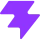
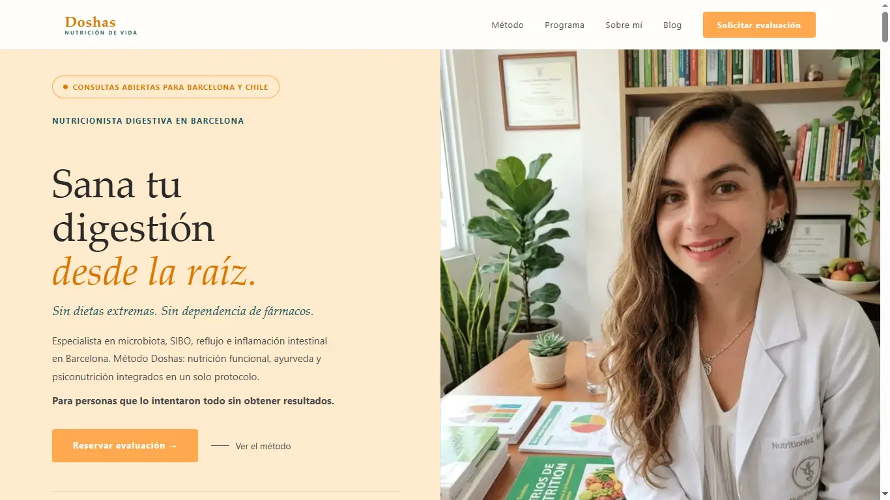
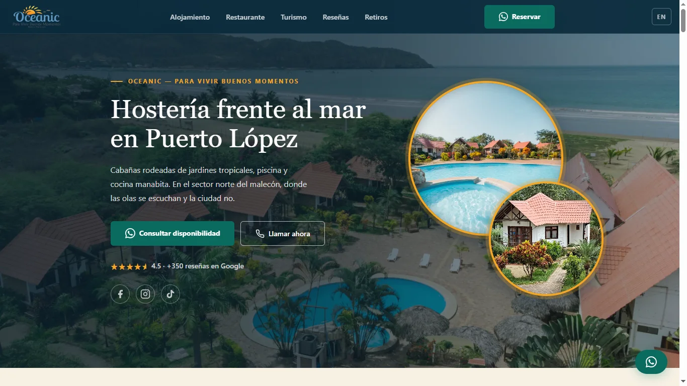
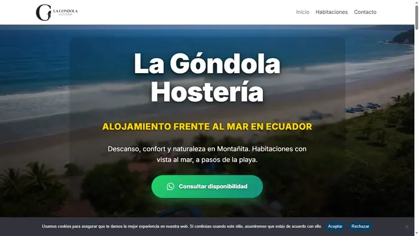
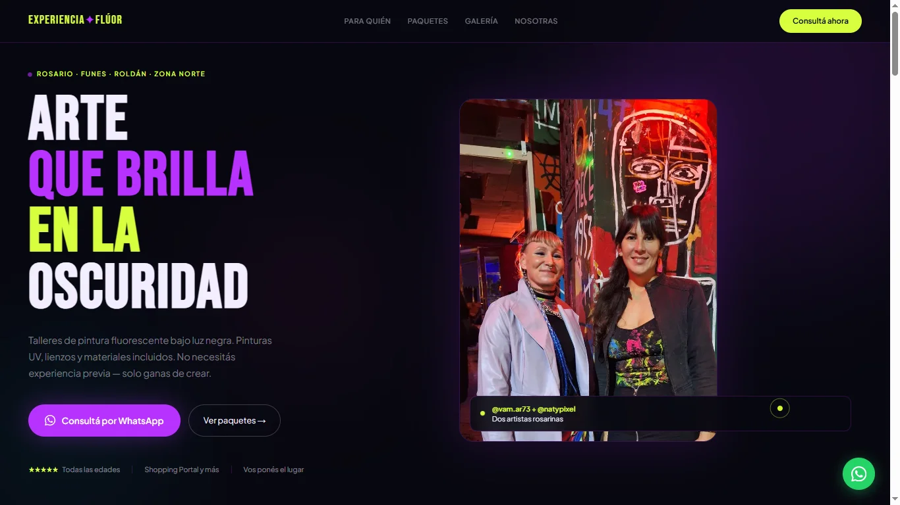

Urgencias en 3 capas
Opción de menú, reglas locales sin IA y clasificación con Gemini con pregunta de confirmación. Nació de un falso positivo real en una demostración: lo diagnostiqué en el log y rediseñé la detección.
Argentina · Remoto · Disponible para viajar o reubicarme
Automatización con IA e integraciones, con el rigor de 15 años en quirófano
Programo y trabajo con clientes desde 2019 · Node.js · n8n · WhatsApp API · Gemini API
Busco sumarme a un equipo como desarrolladora de automatización con IA, integraciones o full-stack.

Proyecto destacado · Automatización con IA
Bot en Node.js con la API oficial de WhatsApp (Meta) y Gemini: clasifica mensajes, toma los datos de un turno y avisa al médico con plantillas de Meta. Detecta urgencias en tres capas, valida la firma de cada mensaje, tiene panel con login y 123 casos de prueba automáticos. Es una demostración con un consultorio ficticio: el README explica con claridad qué hace y qué no.
Estado: demostración funcional con un consultorio ficticio, corriendo en mi VPS. No da consejo médico ni reemplaza una emergencia.
+54 9 11 7829-2702 · Demostración con un consultorio ficticio: no envíes datos de salud reales.
Opción de menú, reglas locales sin IA y clasificación con Gemini con pregunta de confirmación. Nació de un falso positivo real en una demostración: lo diagnostiqué en el log y rediseñé la detección.
Alertas por plantilla de Meta, con respaldo en texto libre y resultado registrado. Verificado por WhatsApp con la ventana de 24 h abierta y cerrada.
Validación de la firma de Meta, SSH solo con clave, firewall activo y puerto interno cerrado. Panel con login, límite de intentos y datos escapados (XSS probado).
8 suites de pruebas automáticas (123 casos), documentación técnica versionada y un registro de qué está verificado, qué es hipótesis y qué falta.
Lo que todavía no hace: no agenda por sí misma (envía un enlace, sin integración real de calendario), no guarda conversaciones (decisión de privacidad pendiente) y la transcripción de audio está activada solo en la demostración. Para un cliente real falta el criterio legal sobre datos de salud.
Stack técnico
En Aurora y en sitios de clientes.
Las usé en proyectos, pero no son mi eje.
Las estoy aprendiendo; todavía sin proyecto propio.

ViteTrabajo seleccionado
01 · Automatización con IA
Aurora (arriba) y sistemas de demostración sobre WhatsApp y Gemini API.

2026 · Demo pública, funcionando
Flujo en n8n para consultorios médicos: recordatorios automáticos por WhatsApp y clasificación de las respuestas con IA generativa. Funcionando en VPS propio como demo pública con Evolution API; para clientes, Meta Cloud API oficial.
Ver en GitHub02 · Clientes reales
Sitios en producción, con dominio propio y tráfico real.

2026 · Cliente real · Barcelona, España
Landing page completa para nutricionista digestiva con 99k seguidores en Instagram. HTML/CSS/JS estático, Performance 100 y Best Practices 100 en PageSpeed Insights (31/10/2026), Schema MedicalBusiness + FAQPage + AggregateRating, integración Stripe con modal de país (España / Chile) y blog SEO con un artículo nuevo cada 15 días.
Ver sitio
2026 · Cliente real · Ecuador
Sitio bilingüe (es/en) para hostería frente al mar en Puerto López, Ecuador. HTML/CSS/JS puro, sin librerías: 7 tipos de unidad con carruseles propios, restaurante, preguntas frecuentes y una landing propia para retiros de yoga y bienestar (grupos de hasta 60 personas). Schema LodgingBusiness + Hotel y FAQPage, GTM/GA4 con eventos, WebP y Lighthouse 90+ en mobile y desktop.
Ver sitio Ver landing de retiros
2026 · Cliente real · Ecuador
Sitio en WordPress sin actualizar desde su creación en 2017. Optimización de rendimiento completa: de 48 a 100 en Lighthouse. Sin migrar el CMS — trabajo directo sobre la instalación existente.
Ver sitio“Después de varias webs fallidas, Yulia profesionalizó mi negocio con una arquitectura a medida y entrega inmediata. Su capacidad para traducir mi necesidad en un sistema funcional es única. Es acompañamiento estratégico real, no un simple servicio técnico.”
María José Guerra Valdés
Método Doshas · metododoshas.com · Barcelona y Chile
03 · Herramientas y repositorios
Templates y herramientas reutilizables. No son sitios web.
2026
Kit de checklist técnico y monitoreo de visibilidad en motores de respuesta generativa. Protocolo manual de 13 queries contra 5 plataformas de IA (ChatGPT, Gemini, Perplexity, Claude, Google AI Overviews) y tracker automatizado en Node.js que consulta la Gemini API vía cron y calcula un score diario de menciones de marca.
Ver repo2026
Templates JSON-LD reutilizables para infraestructura digital médica: Physician, MedicalBusiness, FAQPage, Article y BreadcrumbList. Probados en producción con Lighthouse 90-100/100.
Ver repo2026
Componentizador de nav y footer en JS puro para sitios estáticos sin build system: un solo archivo de configuración se inyecta en todas las páginas. Incluye template de Hero con checklist de 24 puntos de performance y accesibilidad.
Ver repo04 · Más trabajo
Marca propia y demos técnicas.

2025 · Marca propia, en transición hacia automatización con IA
Sitio de marca propia. HTML/CSS/JS estático sin CMS. Lighthouse 100, Schema completo. Hoy aloja el servicio de recepcionista virtual con IA.
Ver en GitHub
2026
Landing en React para clínica GLP-1. Calculadora de IMC, simulador de elegibilidad y tracker de dosis con custom hooks.
Ver en GitHub
2025
Demo de portfolio con glassmorphism, CSS crítico inline y marcado Schema.org.
Ver en GitHub
2026
Landing de conversión para talleres de pintura fluorescente en Rosario. Dark theme neón, CTAs de WhatsApp por paquete y CSS puro sin dependencias.
Ver en GitHub
15 años en quirófano, entre prácticas y ejercicio profesional. Hoy, desarrolladora full stack y de automatización con IA.
Trabajé en quirófano durante más de una década — cirugía general, neurocirugía, traumatología, guardias nocturnas. Ese trabajo me dejó algo que no se aprende en un curso: precisión bajo presión, protocolo, y la costumbre de que el detalle que parece menor es el que importa.
Desde 2019 programo y trabajo con clientes: construyo, despliego y mantengo sitios en Argentina, España y Ecuador. Mis sistemas de automatización con IA ya funcionan; todavía no tienen clínicas clientes. Desde octubre de 2026 curso la Diplomatura en IA y AI Automation Developer.